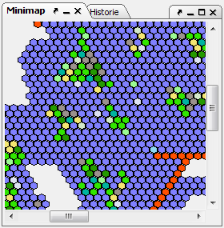

This map shows an eagle's eye view, making it possible to see a larger portion of the world. If a region is selected here, the main map will be centered on this region, and the region will be opened in the region tree. As with the main map, the MiniMap offers a range of options.